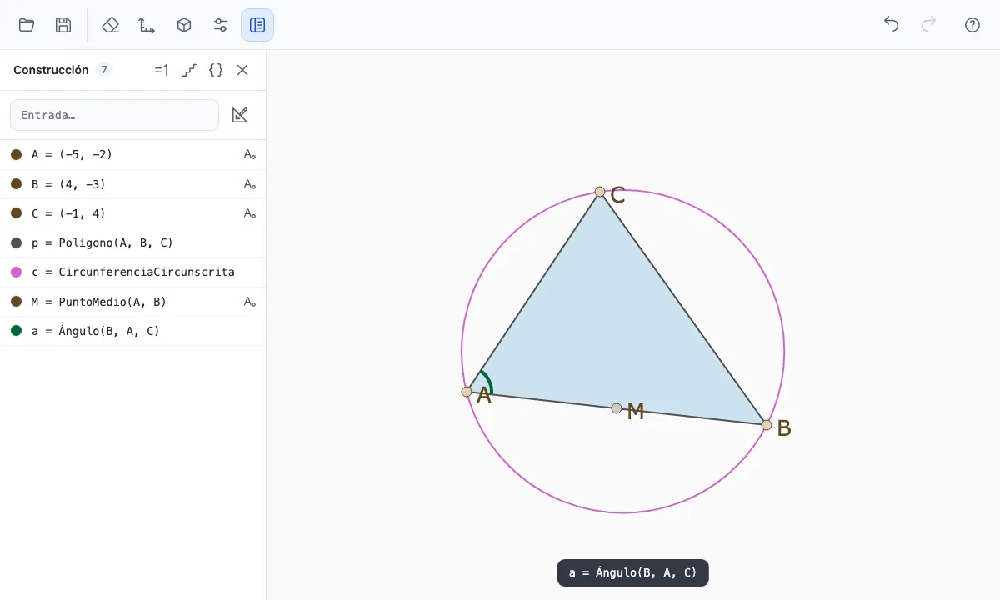
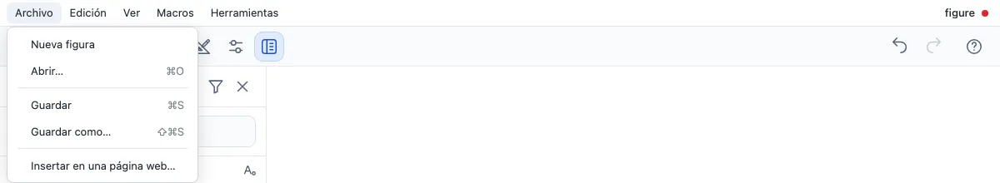

La interfaz

La barra de menús

| Menú | Comandos |
|---|---|
| Archivo | Nueva figura, Nueva página, Eliminar la página (libros), Abrir… (Ctrl O), Abrir un documento reciente, Guardar (Ctrl S), Guardar como… (Ctrl Mayús S), Insertar en una página web…; Nueva vista, Eliminar la vista, Mover la vista a la izquierda, Mover la vista a la derecha (vistas) |
| Edición | Deshacer, Rehacer, Eliminar, Goma de borrar |
| Ver | Ejes, Vista 3D, Historial de la construcción, Paleta de herramientas, Propiedades, Pantalla completa (Esc para salir): una marca indica lo que se muestra |
| Herramientas | Manual de uso, DocTools, Licencia y GitHub, Acerca de… |
A la derecha, el nombre del archivo de la figura, en Chrome y Edge (guardar). La barra de menús no aparece cuando DocGeo está integrado en otra página, como DocTools.
La barra de acciones
| Botón | Función | |
|---|---|---|
| Abrir |
.dgo, .dgp,
.ggb
|
|
| Guardar | en .dgo |
|
| Goma de borrar | ocultar o mostrar objetos (goma) | |
| Ejes | ejes y cuadrícula; en 3D, triedro y suelo | |
| Vista 3D | pasar al espacio o volver al plano (3D) | |
| Paleta de herramientas | panel derecho de las herramientas (paleta) | |
| Propiedades | panel derecho (propiedades) | |
| Construcción | panel izquierdo | |
| Deshacer, Rehacer | Ctrl Z, Ctrl Mayús Z o Ctrl Y | |
| Manual de uso | abre el manual en el idioma de DocGeo, en una pestaña nueva |
En el centro, la zona contextual muestra el nombre y las acciones del objeto seleccionado.
El panel «Construcción»
-
Una línea por objeto, en el orden de construcción:
M = PuntoMedio(A, B). Cada línea se puede modificar (redefinición). - El punto de color al inicio de la línea oculta o muestra el objeto; al final de la línea muestra su nombre. El de un punto tiene su forma y sus colores.
- abre su definición en las propiedades.
- Al pasar el puntero por cualquier fila, permite borrar el objeto y sus dependientes. Esta acción se puede deshacer.
- Cabecera: número de objetos, valores, paso a paso, filtros.
- Línea de entrada «Entrada…»; por debajo de 500 px de ancho, se le añade el botón de la paleta.
- Pasar el puntero por una línea hace brillar el objeto, y a la inversa.
La indicación
La burbuja de la parte inferior de la figura indica lo que se espera («Selecciona un punto»), la línea que la herramienta va a escribir y los errores en rojo. Su cruz ✕ abandona la herramienta en curso.
Navegar
| Acción | Gesto |
|---|---|
| Mover la vista | arrastrar un lugar vacío; botón derecho en cualquier sitio |
| Hacer zoom |
rueda o panel táctil, alrededor del puntero pellizco con dos dedos : zoom alrededor del punto medio entre los dedos |
| Girar una figura 3D | botón derecho, o un dedo en un lugar vacío |
| Perspectiva, suelo (3D) | P, S |
El botón redondo de abajo a la izquierda, presente cuando la figura contiene animaciones, las pone en pausa o las reanuda.
Varias vistas
Como las vistas gráficas de GeoGebra, una figura puede mostrarse en varias vistas, en columnas una al lado de otra. La construcción sigue siendo única: cada objeto se dibuja en una vista, y todo se actualiza en directo.
| Acción | Cómo |
|---|---|
| Añadir una vista | Archivo › Nueva vista: una columna más, a la derecha, con los ajustes de la vista activa; las columnas toman el mismo ancho |
| Activar una vista | tocarla: una fina barra azul marca su borde superior. Este clic no crea ningún punto. |
| Cambiar el tamaño | arrastrar la separación entre dos columnas |
| Cambiar el orden | Archivo › Mover la vista a la izquierda, Archivo › Mover la vista a la derecha |
| Eliminar | Archivo › Eliminar la vista: su vecina ocupa su lugar y recibe sus objetos |
- Un objeto se crea en la vista activa, con una herramienta como con la línea de entrada. Construido sobre objetos de otra vista, se apoya en sus coordenadas en la suya.
- Cada vista tiene sus propios ajustes: Ver › Ejes y Ver › Vista 3D, como la pestaña «Figura», se aplican a la vista activa. Una vista plana junto a una vista 3D muestra la figura desde arriba.
Estas acciones se pueden deshacer. Una figura de GeoGebra con dos vistas gráficas, o cuya vista gráfica está junto a la vista 3D, se abre en dos vistas.
Deshacer
Toda modificación es un paso de una pila única: construcción, eliminación, desplazamiento, estilo, ajuste del sistema de coordenadas, paso a 3D. El zoom, el desplazamiento y la rotación de la vista no lo son.
Los paneles
- Su borde interior se arrastra para cambiar su tamaño; un doble clic restablece el ancho predeterminado.
- Por debajo de 900 px de ancho, solo hay un panel abierto a la vez; con 600 px o menos, el panel «Construcción» empieza cerrado, las propiedades cubren la figura y elegir una herramienta cierra los paneles.